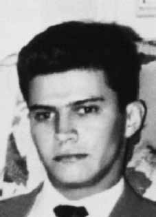

José
Toledo
de Oliveira
CIRCUNSTÂNCIAS DA MORTE
O Relatório Arroyo descreve o episódio que teria resultado na morte de Antônio em 21 de setembro de 1972: No Destacamento C, perto do dia 20 de setembro, dois companheiros, Vitor e Cazuza, deslocavam-se para fazer um encontro com três companheiros. Acamparam perto de onde devia ser o encontro. À tardinha, ouviram barulho de gente que ia passando perto. Cazuza achou que eram os companheiros e quis ir ao encontro deles, mas Vitor não permitiu. Disse que só devia ir ao ponto no dia seguinte. Pela manhã Cazuza convenceu Vitor a permitir que ele fosse ao local onde, na véspera, ouvira o barulho. Vitor ainda insistiu que não se devia ir ao ponto, mas acabou concordando. Ao se aproximar do local do barulho, Cazuza foi metralhado e morreu. Vitor encontrou os três – Dina (Dinalva Oliveira Teixeira). Antonio (Antonio Carlos Monteiro Teixeira) e Zé Francisco (Francisco Chaves). Como estavam sem alimento, Vitor resolveu ir à roça de um tal de Rodrigues apanhar mandioca. Os companheiros disseram que lá não havia mais mandioca. Vitor, porém, insistiu. Quando se aproximaram da roça, viram rastros de soldados. Então, Vitor decidiu que os quatro deveriam esconder-se na capoeira, próxima à estrada, certamente para ver se os soldados passavam e depois então ir apanhar mandioca. Acontece que, no momento exato em que os soldados passavam pelo local onde eles estavam, um dos companheiros fez um ruído acidental. Os soldados imediatamente metralharam os quatro. Dois morreram logo: Vitor e Zé Francisco. Antonio foi gravemente ferido e levado para São Geraldo, onde foi torturado e assassinado. O Diário de Maurício Grabois também faz referência às circunstâncias da morte de José Toledo de Oliveira: No mês de setembro, por ocasião da grande campanha das FFAA contra o movimento guerrilheiro, o DC teve mais 4 baixas fatais. Todas elas por infração das leis da guerrilha e por inexperiência militar do seu VC. Este, em companhia de Cazuza, ia se encontrar com 3 co do D. No caminho, ouviram ruído de vozes. Cazuza achou, sem qualquer razão, que se tratava de gente da guerrilha. No dia seguinte de manhã, Vitor permitiu que seu companheiro fosse investigar, sem que houvesse qualquer necessidade de fazê-lo. Resultado: tratava-se de um acampamento inimigo. Cazuza foi descoberto e morto, sendo enterrado no próprio local. Sozinho, Vitor foi ao encontro de Antonio, Dina e Zé Francisco. Depois de apanha-los, ao passar por um caminho, Vitor observou rastros do inimigo. Resolveu então observá-lo, sem que houvesse motivo para isso. O local escolhido para a observação era péssimo: em frente a um cipoal e a uns poucos metros da estrada. Alguns co não acharam justa a decisão, mas Vitor insistiu. Três horas depois, o inimigo apareceu. Já tinha passado quase toda a tropa adversária, quando faltava passar apenas o último soldado, Zé Francisco fez barulho, talvez deixando cair a arma. Irrompeu, então, violento tiroteio. Dina caiu fora, tendo uma bala arranhado seu pescoço. Os outros três ficaram mortos no terreno. Segundo o livro Dossiê Ditadura, a morte de José é confirmada pelo Relatório da Operação Sucuri, de maio de 1974. O Relatório de Situação n.° 2/72, assinado pelo General de Divisão Olavo Viana Moog também atribui sua morte ao 10º Batalhão de Caçadores, na região de Pau Preto, no período de 25 de setembro a 2 de outubro de 1972iv. Além desta documentação, o relatório do Centro de Informações do Exército (CIE), Ministério do Exército, afirma que José foi morto em 1972v . Em entrevista ao jornal Opção, edição de 24 a 30 de junho de 2012, o sargento José Manoel Pereira afirmou que participou do evento que culminou na morte de: José Toledo de Oliveira, Antônio Carlos Monteira Teixeira e Francisco Manoel Chaves. O militar declarou que ele estava no comando do grupamento composto pelo: Soldado Raoil, Soldado Maurício, Soldado Arnaldo, Soldado Jean, Soldado Mascarenhas e Cabo Barreto, quando cruzaram com os militantes na região do Pau Preto. Com exceção dos dois últimos, todos teriam disparado contra os três guerrilheiros, que morreram, e os seis militares teriam deslocado os corpos a um rancho de um homem também chamado José Pereira. No dia seguinte, os corpos foram carregados, em um helicóptero da Aeronáutica, para a Base Militar de São Geraldo do Araguaia (PA) que funcionava sob responsabilidade do General Bandeira. Nesta ação estavam presentes o Sargento José Manoel Pereira e três outras pessoas, sendo uma delas o Sargento Eurípedes. Ao detalhar as “ações mais importantes realizadas pelas peças de manobra”, o Relatório da Manobra Araguaia, assinado pelo General Antônio Bandeira, registra a morte desses três guerrilheiros como resultado de “Ação de emboscada, por uma esquadra (1 Cb e 5 Sd), em 26 set 72, numa grota distante cerca de 3km da casa do velho MANOEL.”, realizada pelo 10º Batalhão de Caçadores. O documento fornece também informações sobre a localização do episódio que corroboram o relato de José Manoel Pereira: Ação de patrulhamento, em 29 Set 72, executada por 2 GC, na Região de Pau Preto teve como resultado a morte dos seguintes terroristas (sic): JOSÉ TOLEDO DE OLIVEIRA „VICTOR‟ (Sub Cmt Dst C); ANTONIO CARLOS MONTEIRO TEIXEIRA „ANTONIO‟ (Dst C – Cmt Grupo 500); „ZÉ FRANCISCO‟ ou „PRETO VELHO‟ (Dstc C – Grupo 500). E há uma observação consignando que, no evento, foi apreendida “farta documentação subversiva abordando tópicos de doutrina, observações a respeito da tropa que os perseguia, além de detalhados croquis sobre a parte da área de operação”.vi Ademais dos registros militares, o livro Dossiê Ditadura traz relatos de sobreviventes da Guerrilha que corroboram a morte do guerrilheiro. Em depoimento de Regilena Carvalho, publicado na obra Vestígios do Araguaia, a ex-guerrilheira confirma ter visto a foto de José Toledo de Oliveira morto. A fotografia teria sido exibida pelo General Antônio Bandeira, o qual informou que a morte ocorrera em 20 de setembro de 1972. No mesmo sentido, Dower Morais Cavalcanti afirmou, em depoimento à 1ª Vara da Justiça Federal, que – enquanto estava preso no Pará – o General Bandeira o levou à Base Militar de Xambioá para identificar os guerrilheiros. Dower testemunha que, quando chegou à base, os corpos já haviam sido enterrados em uma vala comum e o Exército detinha diversos objetos pessoais dos guerrilheiros. O livro Dossiê Ditadura menciona também a declaração da camponesa Luzinete à Comissão Especial sobre Mortos e Desaparecidos Políticos (CEMDP), em julho de 1996, que indica a Terra Indígena Sororó, às margens da estrada, perto de São Raimundo (PA), como o local de sepultura de José Toledo de Oliveira. O livro informa também que a Equipe Argentina de Antropologia Forense encontrou no local os restos mortais cujo estado de deterioração impediu a realização de exames de identificação.
The Arroyo Report describes the episode that resulted in Antônio's death on September 21, 1972: In Detachment C, around September 20, two companions, Vitor and Cazuza, were traveling to meet three companions. They camped near where the meeting was supposed to be. In the afternoon, they heard the noise of people passing by. Cazuza thought it was his companions and wanted to go meet them, but Vitor didn't allow it. He said he should only go to the point the next day. In the morning, Cazuza convinced Vitor to allow him to go to the place where, the day before, he had heard the noise. Vitor still insisted that we shouldn't go to that point, but ended up agreeing. As he approached the scene of the noise, Cazuza was machine-gunned and died. Vitor found the three – Dina (Dinalva Oliveira Teixeira). Antonio (Antonio Carlos Monteiro Teixeira) and Zé Francisco (Francisco Chaves). As they were without food, Vitor decided to go to the field of a certain Rodrigues to collect cassava. The companions said that there was no more cassava there. Vitor, however, insisted. When they approached the field, they saw tracks of soldiers. So, Vitor decided that the four of them should hide in the capoeira, close to the road, certainly to see if the soldiers were passing by and then go collect cassava. It turns out that, at the exact moment the soldiers were passing by the place where they were, one of their companions made an accidental noise. The soldiers immediately machine-gunned the four. Two died soon: Vitor and Zé Francisco. Antonio was seriously injured and taken to São Geraldo, where he was tortured and murdered. Maurício Grabois's Diary also makes reference to the circumstances surrounding José Toledo de Oliveira's death: In September, on the occasion of the FFAA's major campaign against the guerrilla movement, the DC suffered 4 more fatal casualties. All of them due to the violation of guerrilla laws and the military inexperience of their VC. This one, in the company of Cazuza, was going to meet 3 of D's dogs. On the way, they heard the sound of voices. Cazuza thought, without any reason, that they were guerrilla fighters. The next morning, Vitor allowed his companion to investigate, without there being any need to do so. Result: it was an enemy camp. Cazuza was discovered and killed, being buried on site. Alone, Vitor went to meet Antonio, Dina and Zé Francisco. After catching them, when passing along a path, Vitor observed traces of the enemy. He then decided to observe him, without there being any reason to do so. The location chosen for observation was terrible: in front of a cipo grove and a few meters from the road. Some people didn't think the decision was fair, but Vitor insisted. Three hours later, the enemy appeared. Almost the entire opposing troop had already passed, when only the last soldier was left to pass, Zé Francisco made a noise, perhaps dropping his weapon. Violent gunfire then broke out. Dina fell out, having a bullet graze her neck. The other three were left dead on the ground. According to the book Dossier Ditadura, José's death is confirmed by the Operation Sucuri Report, from May 1974. Situation Report No. 2/72, signed by Division General Olavo Viana Moog also attributes his death to the 10th Hunter Battalion, in the Pau Preto region, in the period from September 25th to October 2nd, 1972iv. In addition to this documentation, the report from the Army Information Center (CIE), Ministry of the Army, states that José was killed in 1972v. In an interview with the newspaper Opção, edition from June 24 to 30, 2012, sergeant José Manoel Pereira stated that he participated in the event that culminated in the death of: José Toledo de Oliveira, Antônio Carlos Monteira Teixeira and Francisco Manoel Chaves. The soldier declared that he was in command of the group composed of: Private Raoil, Private Maurício, Private Arnaldo, Private Jean, Private Mascarenhas and Cabo Barreto, when they crossed paths with the militants in the Pau Preto region. With the exception of the last two, everyone would have shot at the three guerrillas, who died, and the six soldiers would have moved the bodies to a ranch belonging to a man also called José Pereira. The following day, the bodies were carried in an Air Force helicopter to the Military Base of São Geraldo do Araguaia (PA), which operated under the responsibility of General Bandeira. Sergeant José Manoel Pereira and three other people were present at this action, one of them being Sergeant Eurípedes. When detailing the “most important actions carried out by the maneuver pieces”, the Araguaia Maneuver Report, signed by General Antônio Bandeira, records the death of these three guerrillas as a result of “Ambush action, by a squadron (1 Cb and 5 Sd), on 26 September 72, in a cave approximately 3km from old MANOEL's house.”, carried out by the 10th Battalion of Hunters. The document also provides information about the location of the episode that corroborates José Manoel Pereira's report: Patrolling action, on 29 Sep 72, carried out by 2 GC, in the Pau Preto Region resulted in the death of the following terrorists (sic): JOSÉ TOLEDO DE OLIVEIRA „VICTOR‟ (Sub Cmt Dst C); ANTONIO CARLOS MONTEIRO TEIXEIRA „ANTONIO‟ (Dst C – Cmt Group 500); „ZÉ FRANCISCO‟ or „PRETO VELHO‟ (Dstc C – Group 500). And there is an observation stating that, in the event, “abundant subversive documentation covering topics of doctrine, observations regarding the troops that pursued them, as well as detailed sketches of part of the area of operation” were seized.vi In addition to the military records, the book Dossier Ditadura brings reports from Guerrilla survivors that corroborate the death of the guerrilla. In a statement by Regilena Carvalho, published in the work Vestígios do Araguaia, the former guerrilla confirms having seen the photo of José Toledo de Oliveira dead. 1st Court of Federal Justice, that – while he was imprisoned in Pará – General Bandeira took him to the Xambioá Military Base to identify the guerrillas. Dower testifies that, when he arrived at the base, the bodies had already been buried in a mass grave and the Army held several personal objects of the guerrillas. July 1996, which indicates the Sororó Indigenous Land, on the side of the road, near São Raimundo (PA), as the burial place of José Toledo de Oliveira. The book also informs that the Argentine Forensic Anthropology Team found the remains at the site whose deteriorated state prevented identification tests from being carried out.
El Informe Arroyo describe el episodio que resultó en la muerte de Antônio el 21 de septiembre de 1972: En el Destacamento C, alrededor del 20 de septiembre, dos compañeros, Vitor y Cazuza, viajaban para encontrarse con tres compañeros. Acamparon cerca de donde se suponía que sería la reunión. Por la tarde escucharon el ruido de la gente que pasaba. Cazuza pensó que eran sus compañeros y quiso ir a su encuentro, pero Vítor no se lo permitió. Dijo que sólo debería ir al punto al día siguiente. Por la mañana, Cazuza convenció a Vítor para que le permitiera ir al lugar donde el día anterior había oído el ruido. Vítor siguió insistiendo en que no debíamos llegar a ese punto, pero acabó accediendo. Cuando se acercaba al lugar del ruido, Cazuza fue ametrallado y murió. Vitor encontró a los tres: Dina (Dinalva Oliveira Teixeira). Antonio (Antonio Carlos Monteiro Teixeira) y Zé Francisco (Francisco Chaves). Como se encontraban sin comida, Vítor decidió ir al campo de un tal Rodrigues a recolectar mandioca. Los compañeros dijeron que allí ya no había yuca. Vítor, sin embargo, insistió. Cuando se acercaron al campo, vieron huellas de soldados. Entonces, Vítor decidió que los cuatro se escondieran en la capoeira, cerca del camino, seguramente para ver si pasaban los soldados y luego ir a recoger yuca. Resulta que, en el momento exacto en que los soldados pasaban por el lugar donde se encontraban, uno de sus compañeros hizo un ruido accidental. Los soldados inmediatamente ametrallaron a los cuatro. Dos murieron pronto: Vitor y Zé Francisco. Antonio resultó gravemente herido y llevado a São Geraldo, donde fue torturado y asesinado. El Diario de Maurício Grabois también hace referencia a las circunstancias que rodearon la muerte de José Toledo de Oliveira: En septiembre, con motivo de la gran campaña de las FFAA contra la guerrilla, la DC sufrió 4 bajas mortales más. Todo ello por la violación de las leyes guerrilleras y la inexperiencia militar de su VC. Éste, en compañía de Cazuza, iba a encontrarse con 3 de los perros de D. En el camino escucharon voces. Cazuza pensó, sin razón alguna, que eran guerrilleros. A la mañana siguiente, Vítor permitió que su compañero investigara, sin que fuera necesario hacerlo. Resultado: era un campamento enemigo. Cazuza fue descubierta y asesinada, siendo enterrada en el lugar. Solo, Vítor fue a encontrarse con Antonio, Dina y Zé Francisco. Después de atraparlos, al pasar por un camino, Vítor observó huellas del enemigo. Entonces decidió observarlo, sin que existiera motivo alguno para ello. El lugar elegido para la observación fue pésimo: frente a un bosque de cipos y a pocos metros de la carretera. A algunos no les pareció justa la decisión, pero Vítor insistió. Tres horas después apareció el enemigo. Casi toda la tropa enemiga ya había pasado, cuando solo quedaba pasar el último soldado, Zé Francisco hizo un ruido, quizás dejando caer su arma. Luego se produjeron violentos disparos. Dina se cayó y una bala le rozó el cuello. Los otros tres quedaron muertos en el suelo. Según el libro Dossier Ditadura, la muerte de José es confirmada por el Informe de la Operación Sucuri, de mayo de 1974. El Informe de Situación nº 2/72, firmado por el General de División Olavo Viana Moog, también atribuye su muerte al 10º Batallón de Cazadores, en la región de Pau Preto, en el período comprendido entre el 25 de septiembre y el 2 de octubre de 1972iv. Además de esta documentación, el informe del Centro de Información del Ejército (CIE), del Ministerio del Ejército, señala que José fue asesinado en 1972v. En entrevista con el diario Opção, edición del 24 al 30 de junio de 2012, el sargento José Manoel Pereira afirmó haber participado en el hecho que culminó con la muerte de: José Toledo de Oliveira, Antônio Carlos Monteira Teixeira y Francisco Manoel Chaves. El militar declaró que estaba al mando del grupo compuesto por: el soldado Raoil, el soldado Maurício, el soldado Arnaldo, el soldado Jean, el soldado Mascarenhas y Cabo Barreto, cuando se cruzaron con los militantes en la región de Pau Preto. A excepción de los dos últimos, todos habrían disparado contra los tres guerrilleros, quienes murieron, y los seis militares habrían trasladado los cuerpos a una estancia de un señor también llamado José Pereira. Al día siguiente, los cadáveres fueron trasladados en un helicóptero de la Fuerza Aérea a la Base Militar de São Geraldo do Araguaia (PA), que operaba bajo la responsabilidad del general Bandeira. En esta acción estuvieron presentes el sargento José Manoel Pereira y otras tres personas, siendo uno de ellos el sargento Eurípedes. Al detallar las “acciones más importantes realizadas por las piezas de maniobra”, el Informe de Maniobra de Araguaia, firmado por el General Antônio Bandeira, registra la muerte de estos tres guerrilleros como resultado de una “Acción de emboscada, por parte de un escuadrón (1 Cb y 5 Sd), el día 26 de septiembre de 72, en una cueva a aproximadamente 3 km de la casa del viejo MANOEL”, realizada por el 10º Batallón de Cazadores. El documento también proporciona información sobre la ubicación del episodio que corrobora el relato de José Manoel Pereira: La acción de patrullaje, el día 29 de septiembre de 72, realizada por el 2 GC, en la Región de Pau Preto resultó en la muerte de los siguientes terroristas (sic): JOSÉ TOLEDO DE OLIVEIRA „VICTOR‟ (Sub Cmt Dst C); ANTONIO CARLOS MONTEIRO TEIXEIRA „ANTONIO‟ (Dst C – Cmt Group) 500); „ZÉ FRANCISCO‟ o „PRETO VELHO‟ (Dstc C – Grupo 500). Y hay una observación que señala que en el hecho se incautó “abundante documentación subversiva que abarca temas doctrinales, observaciones sobre las tropas que los perseguían, así como croquis detallados de parte del área de operación”.vi Además de los registros militares, el libro Dossier Ditadura trae informes de sobrevivientes de la guerrilla que lo corroboran. La muerte del guerrillero En una declaración de Regilena Carvalho, publicada en la obra Vestígios do Araguaia, el ex guerrillero afirma haber visto la foto de José Toledo de Oliveira muerto, que – mientras estaba preso en Pará – el general Bandeira lo llevó a la Base Militar de Xambioá para identificar a los guerrilleros. Dower testifica que, cuando llegó a la base, los cuerpos ya estaban enterrados en una fosa común y el Ejército guardaba varios objetos personales. guerrilleros de julio de 1996, que señala la Tierra Indígena de Sororó, a un costado de la carretera, cerca de São Raimundo (PA), como lugar de sepultura de José Toledo de Oliveira. El libro también informa que el Equipo Argentino de Antropología Forense encontró en el sitio los restos cuyo estado de deterioro impidió la realización de pruebas de identificación.